MapOutputTrackerMaster: the driver's directory of map outputs
component index | Executor-side tracker
When a reduce task needs shuffle 7, the driver can tell it which map attempts produced usable output, where, and roughly how large each reduce block is. MapOutputTrackerMaster owns that directory for the application. It does not hold the map's records, open its index file, or forward its bytes. This page follows the ordinary blocking, pull-based shuffle.
Flow at a glance
- Map task: Reports where attempt 41 wrote its blocks for shuffle 7.
- Driver scheduler: Records that status in the tracker's slot for map partition 3.
- Driver tracker: Answers executor lookups with locations and size estimates.
Key distinction: A retry can put a new attempt in slot 3. The tracker tells executors where to fetch the new output; it never forwards the shuffle bytes.
Show the animated flow

What the driver stores
| Key or field |
Meaning |
shuffleStatuses(shuffleId) |
A ShuffleStatus for one shuffle. DAGScheduler registers it when creating the shuffle map stage, with the number of input map partitions and output reduce partitions. |
mapStatuses(mapIndex) |
One accepted MapStatus for this input partition, or null if no output is available. There is not a slot per task attempt. A per-shuffle read/write lock guards the slots and the available-output count. |
status.mapId, status.location |
The ID used in the physical block name (normally the task attempt ID) and the serving BlockManagerId. The location can point to an executor's block server or to the optional external shuffle service. |
status.getSizeForBlock(reduceId) |
Estimated bytes for this output partition. Compact encodings preserve the distinction between empty and nonempty blocks; these sizes are not file offsets. |
For example, shuffleStatuses(7).mapStatuses(3) can describe attempt 41. A reader of reduce partition 2 needs ShuffleBlockId(7, 41, 2), not (7, 3, 2). A retry can put a different attempt in slot 3 without renumbering the map partition. The old fetch protocol uses the map partition ID as mapId instead. See the slot layout, map task's ID choice, and MapStatus contract.
From registration to a reducer's lookup
Sequence diagram · Open full sizeText equivalent
sequenceDiagram
participant T as Map task on executor A
participant D as DAGScheduler
participant M as Driver tracker
participant W as Tracker worker on executor B
D->>M: registerShuffle(7, numMaps, numReduces, jobId)
T-->>D: Task result includes MapStatus for attempt 41
D->>M: registerMapOutput(7, mapIndex 3, status)
W->>M: GetMapOutputStatuses(7)
M-->>W: Serialized status array or broadcast reference
Note over W: The reader fetches data from the address in the status
- The driver
SparkEnv creates the master and registers the MapOutputTracker RPC endpoint. At stage creation, the scheduler registers the shuffle if needed. On task success, DAGScheduler checks the completion's epoch, then registers the result using smt.partitionId, not status.mapId. addMapOutput updates the slot, a reverse map from map ID to index, and, for a newly available slot, the count. ShuffleMapStage uses that count for readiness and the missing indices for recomputation.
- On a worker cache miss, the endpoint enqueues
GetMapOutputMessage(shuffleId, context). A dispatcher thread replies on the original RPC context, so serialization does not block the endpoint's normal dispatch thread. The request is for the whole shuffle's status array, not a reduce partition's records.
- The first lookup serializes and caches the snapshot. Below
spark.shuffle.mapOutput.minSizeForBroadcast the encoder returns compressed metadata directly; at or above the threshold it broadcasts that metadata and returns a serialized broadcast reference. Both replies describe the same files. The driver can also sum size estimates by reducer without fetching any data.
Loss, cleanup, and diagnosis
A fetch failure with a known map index can make the scheduler unregister the output. removeMapOutput clears the slot and invalidates the cached snapshot only if the current location matches the reported address; unregisterMapOutput advances the epoch. This prevents a delayed failure at one address from removing a replacement at a different address through that slot update. Executor- or host-level loss can invalidate more than one slot. When retry is allowed, the scheduler, not the tracker, resubmits the affected stages; later tasks carry an epoch that makes workers discard stale metadata.
Diagnostic: If a reducer logs Missing an output location, correlate that shuffle's map-stage completions with driver logs for ignored completions or lost shuffle files. A missing status is not an empty reduce block. If the reducer already has an address and reports an index-file or connection error instead, continue at the resolver or the serving process.
At cleanup, ContextCleaner requests shuffle removal before unregistering its directory entry. At application shutdown SparkEnv calls stop; the master stops its dispatch pool and endpoint and clears the directory. Neither action makes tracker RPCs a file-deletion protocol.